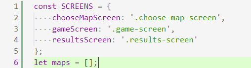
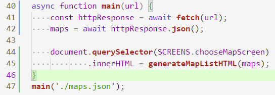
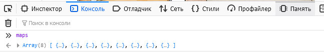
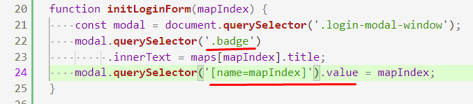
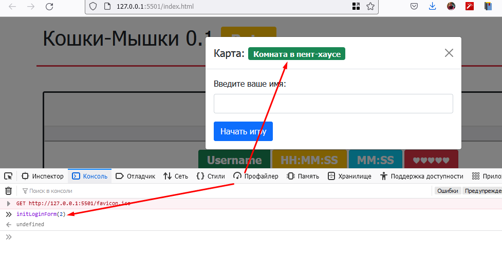
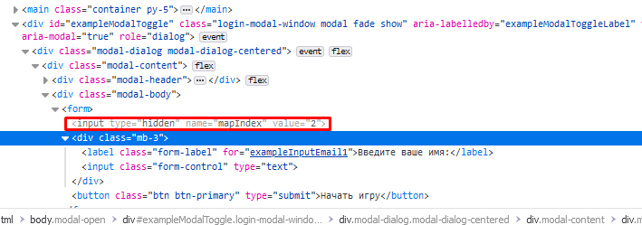
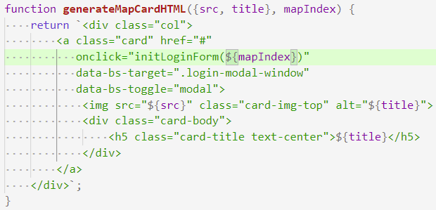
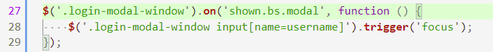
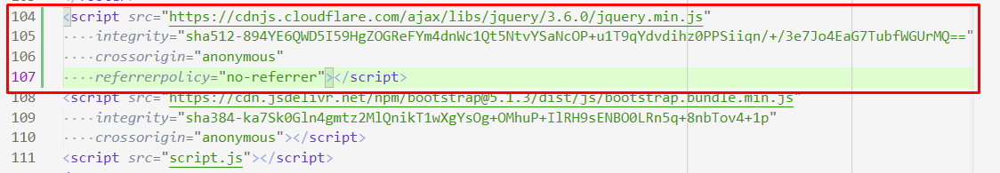

202202190038 Передача информации о выбранной карте в форму Модального окна входа
Второй этап реализации формы входа, второго модуля по WorldSkills КОД 1.3.
На предыдущем шаге мы разобрались с открытием Модального окна в bootstrap, теперь пора проинициализировать эту форму в соответствии с тем, на какую карту нажал пользователь.
Идея
На самом деле, вся информация о картах, хранится в JSON-массиве, который приходит к нам с сервера. Если бы мы хранили его в виде, какой-то переменной, то при генерации списка карт мы могли бы вызывать функцию инициализации модального окна, в которую просто передадим индекс карты в этом массиве.
Реализация
-
Объявим переменную для списка карт. Обратите внимание, все более-менее глобальные переменные мы объявляем сверху в одном месте. В этом даже есть какой-то тайный смысл: 
-
Перепишем загрузку карт на
async/await, а также проинициализируем нашу переменную загруженным списком карт:

- Проверим, что теперь массив списка карт доступен в консоли:

- Теперь напишем функцию, которая будет принимать индекс в этом массиве и инициализирует форму входа:

-
Как мы можем заметить по функции, мы делаем две вещи:
- Подставляем в значок имя карты. (Если бы в форме было больше одного
.badge, пришлось бы придумывать или назначать какой-нибудь свой селектор). - Сохраняем
mapIndexвinput-е формы. Для этого его нужно прописать в форме, а чтобы он не был виден, в HTML есть специальныйtype=hidden:
- Подставляем в значок имя карты. (Если бы в форме было больше одного
-
Теперь зайдем в браузер, откроем модальное окно. И по-вызываем нашу функцию, убедившись, что значок и значение в форме действительно меняются:
 
- Отлично, теперь осталось изменить обработку клика на карточку с картой:

-
На удивление, все будет сразу работать, если мы использовали метод
.map, ведь он как раз передает индекс элемента вторым аргументом. -
Последним моментом, было бы неплохо, делать так, чтобы пользователь сразу мог приступать к вводу имени, для этого на
inputпотребуется активировать фокус. К сожалению, пока модальное окно не показалось нативное использованиеfocus/blurне работает. Придется, воспользоваться советом с сайта Bootstrap Modal, а для этого также придется подключить jQuery с CDN:
 
Следующие шаги
Теперь, обработаем ввод формы, убедившись что имя пользователя введено корректно.